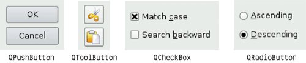
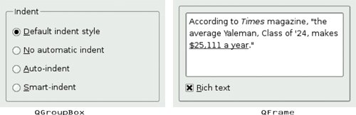
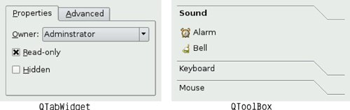
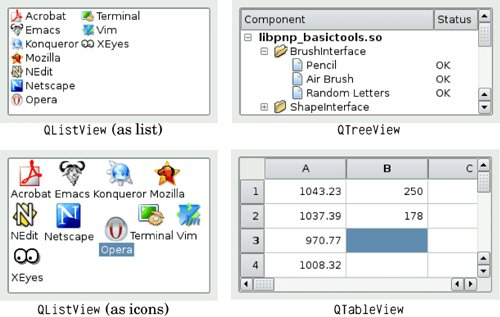
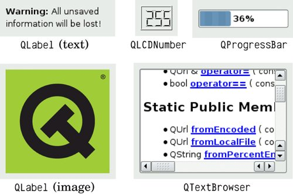
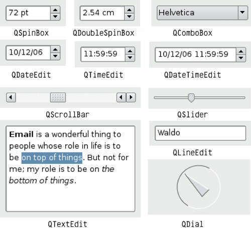
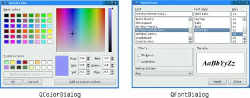
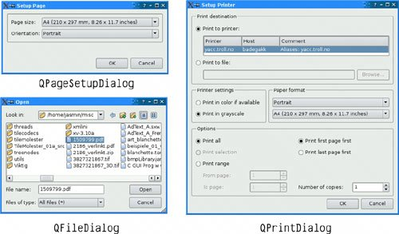
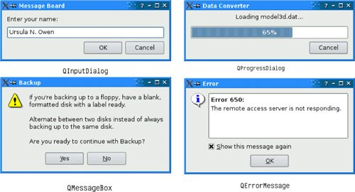

Built-in Widget and Dialog ClassesQt provides a complete set of built-in widgets and common dialogs that cater for most situations. In this section, we present screenshots of almost all of them. A few specialized widgets are deferred until later: Main window widgets such as QMenuBar, QToolBar, and QStatusBar are covered in Chapter 3, and layout-related widgets such as QSplitter and QScrollArea are covered in Chapter 6. Most of the built-in widgets and dialogs are used in the examples presented in this book. In the screenshots below, the widgets are shown using the Plastique style. Figure 2.16. Qt's button widgets Qt provides four kinds of "buttons": QPushButton, QToolButton, QCheckBox, and QRadioButton. QPushButton and QToolButton are most commonly used to initiate an action when they are clicked, but they can also behave like toggle buttons (click to press down, click to restore). QCheckBox can be used for independent on/off options, whereas QRadioButtons are normally mutually exclusive. Figure 2.17. Qt's single-page container widgetsQt's container widgets are widgets that contain other widgets. QFrame can also be used on its own to simply draw lines and is inherited by many other widget classes, including QToolBox and QLabel. Figure 2.18. Qt's multi-page container widgetsQTabWidget and QToolBox are multi-page widgets. Each page is a child widget, and the pages are numbered from 0. Figure 2.19. Qt's item view widgetsThe item views are optimized for handling large amounts of data and often use scroll bars. The scroll bar mechanism is implemented in QAbstractScrollArea, a base class for item views and other kinds of scrollable widgets. Qt provides a few widgets that are used purely for displaying information. QLabel is the most important of these, and it can be used for showing rich text (using a simple HTML-like syntax) and images. QTextBrowser is a read-only QTextEdit subclass that has basic HTML support including lists, tables, images, and hypertext links.Qt Assistant uses QTextBrowser to present documentation to the user. Figure 2.20. Qt's display widgets Qt provides several widgets for data entry. QLineEdit can restrict its input using an input mask or a validator. QTextEdit is a QAbstractScrollArea subclass capable of editing large amounts of text. Figure 2.21. Qt's input widgets Qt provides the standard set of common dialogs that make it easy to ask the user to select a color, font, or file, or to print a document. Figure 2.22. Qt's color dialog and font dialogOn Windows and Mac OS X, Qt uses the native dialogs rather than its own common dialogs when possible. Figure 2.23. Qt's file and print dialogsQt provides a versatile message box and an error dialog that remembers which messages it has shown. The progress of time-consuming operations can be indicated using QProgressDialog or using the QProgressBar shown earlier. QInputDialog is very convenient when a single line of text or a single number is required from the user. A lot of ready-to-use functionality is provided by the built-in widgets and common dialogs. More specialized requirements can often be satisfied by setting widget properties, or by connecting signals to slots and implementing custom behavior in the slots. Figure 2.24. Qt's feedback dialogsIn some situations, it may be desirable to create a custom widget from scratch. Qt makes this straightforward, and custom widgets can access all the same platform-independent drawing functionality as Qt's built-in widgets. Custom widgets can even be integrated with Qt Designer so that they can be used in the same way as Qt's built-in widgets. Chapter 5 explains how to create custom widgets. |